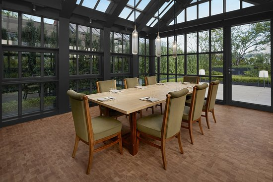
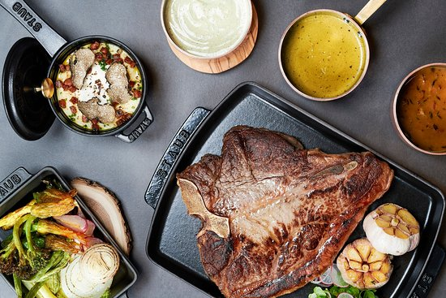
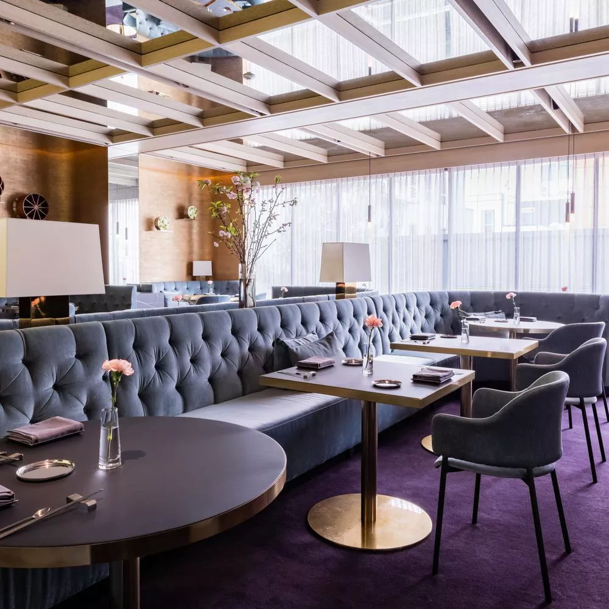
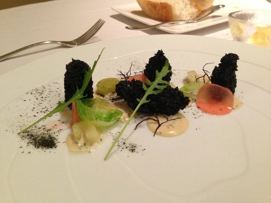

South Korea
The Margaux Grill
An enchanting restaurant surrounded by beautiful gardens, The Margaux Grill is an inspiring fine-dining destination at our hotel in Seoul. Savor fresh seafood and premium beef cooked to perfection while sipping on an exceptional variety of fine wines.


Jungsik
Jungsik is a Michelin-starred restaurant located in the heart of Seoul, South Korea, renowned for its innovative approach to Korean cuisine. By blending traditional Korean flavors with modern culinary techniques, Chef Yim Jung-sik creates exquisite dishes that tantalize the taste buds and delight the senses.

